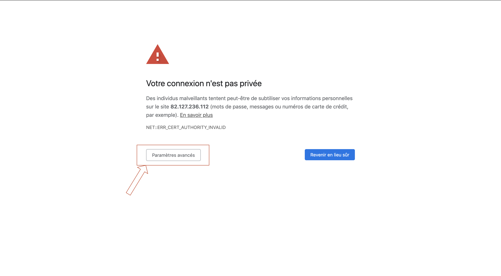
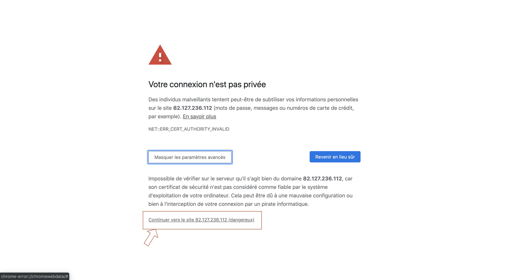
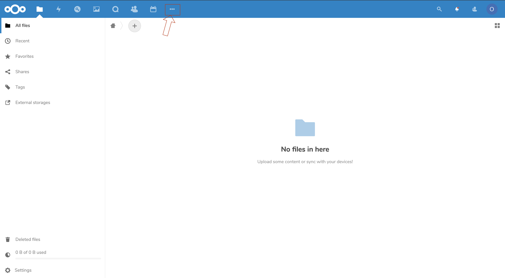
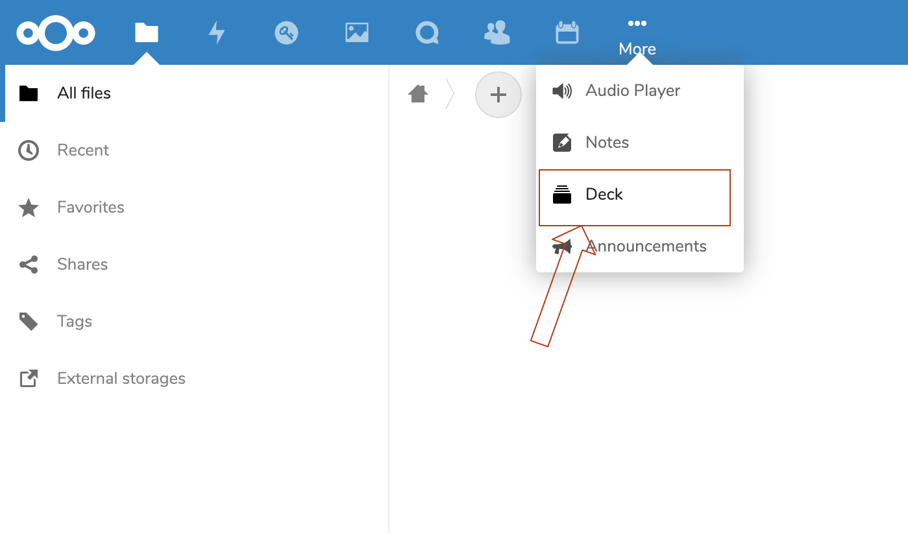
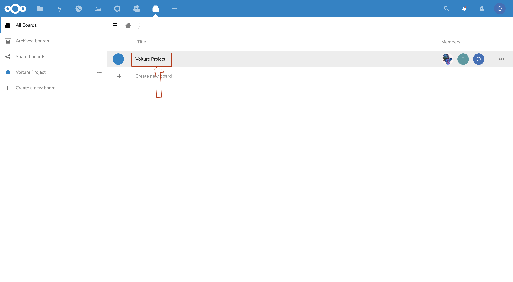
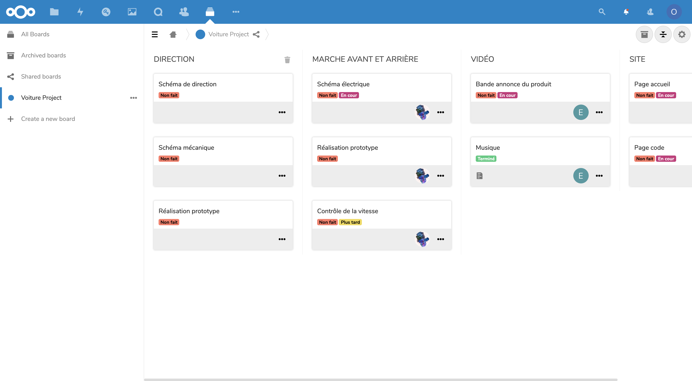

ÉTAPE N°1 :
Le première étape est simple, il vous suffit de vous rendre sur le serveur de BugProg https://82.127.236.112 (si votre navigateur vous indique que la connection n'est pas sécurisée, cliquez sur "Afficher plus" ou quelque chose que s'en rapproche et cliquez sur le bouton vous permettant de consulter le site tout de même)


ÉTAPE N°2 :
Connectez vous avec l'identifiant "ospcar" et le mot de passe "#Aa12345678".
ÉTAPE N°3 :
Cliquez sur l'icône si elle apparait dans votre barre menu ou sur les trois petits points puis sur ...Ici vous trouverez le tableau de bord PROJET VOITURE que vous pouvez consulter librement...



